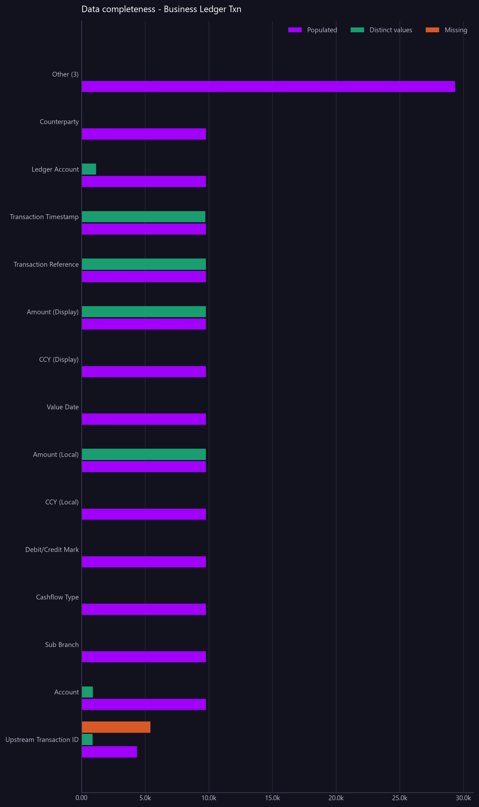

Data completeness - Business Ledger Txn
How populated every column of the ledger is, least complete first. Every other view inherits the quality of these fields.
Asked as How complete is the business ledger data? Show every column with how many rows are populated and how many are missing, least complete first.

% populated is a percentage and cannot share an axis with the amounts, so it is in the table only. Only the largest 14 categories are charted; the remainder are combined into a single 'Other' bar. The full breakdown is in the table.
Commentary
The report indicates that the business ledger data is largely complete, with most columns fully populated. The "Upstream Transaction ID" column is the least complete, with only 4,360 rows populated and 5,420 rows missing, resulting in a 44.60% completion rate. All other columns, such as "Account," "Sub Branch," and "Cashflow Type," are fully populated with 9,780 entries each. The operations team should focus on addressing the missing data in the "Upstream Transaction ID" column to improve overall data completeness.
| Column | Populated | Missing | % populated | Distinct values |
|---|---|---|---|---|
| Upstream Transaction ID | 4,360.00 | 5,420.00 | 44.60 | 868.00 |
| Account | 9,780.00 | 0.00 | 100.00 | 899.00 |
| Sub Branch | 9,780.00 | 0.00 | 100.00 | 8.00 |
| Cashflow Type | 9,780.00 | 0.00 | 100.00 | 5.00 |
| Debit/Credit Mark | 9,780.00 | 0.00 | 100.00 | 2.00 |
| CCY (Local) | 9,780.00 | 0.00 | 100.00 | 27.00 |
| Amount (Local) | 9,780.00 | 0.00 | 100.00 | 9,780.00 |
| Value Date | 9,780.00 | 0.00 | 100.00 | 22.00 |
| CCY (Display) | 9,780.00 | 0.00 | 100.00 | 1.00 |
| Amount (Display) | 9,780.00 | 0.00 | 100.00 | 9,780.00 |
| Transaction Reference | 9,780.00 | 0.00 | 100.00 | 9,780.00 |
| Transaction Timestamp | 9,780.00 | 0.00 | 100.00 | 9,739.00 |
| Ledger Account | 9,780.00 | 0.00 | 100.00 | 1,150.00 |
| Counterparty | 9,780.00 | 0.00 | 100.00 | 45.00 |
| Book Id | 9,780.00 | 0.00 | 100.00 | 32.00 |
| Trade Status | 9,780.00 | 0.00 | 100.00 | 3.00 |
| Net Type | 9,780.00 | 0.00 | 100.00 | 3.00 |
Limitations of this view
- The view is scoped to the Business Ledger Transaction View with data from 2026-07-20 to 2026-08-18.
- This is synthetic, non-production data.
- Data completeness depends on whether all transactions have been received and processed.
Downloads
{kind=link}
The Markdown documents everything considered, so a reader can hand it to an AI and ask follow-up questions about this view.
How this was produced
{
"view": "business_ledger",
"sheet": "Business Ledger Txn View",
"source_file": "synthetic_liquidity_month.xlsx",
"mode": "quality",
"filters": [],
"group_by": [],
"time_bucket": null,
"measures": [],
"columns": [],
"sort_by": null,
"limit": null,
"join": null,
"derived": [],
"currency_corrections": [],
"data_as_of": "2026-08-18T21:35:41",
"measure": null,
"aggregation": null,
"rows_in_view": 9780,
"rows_after_filters": 9780,
"rows_returned": 17,
"executed_at": "2026-08-20T11:29:14"
}